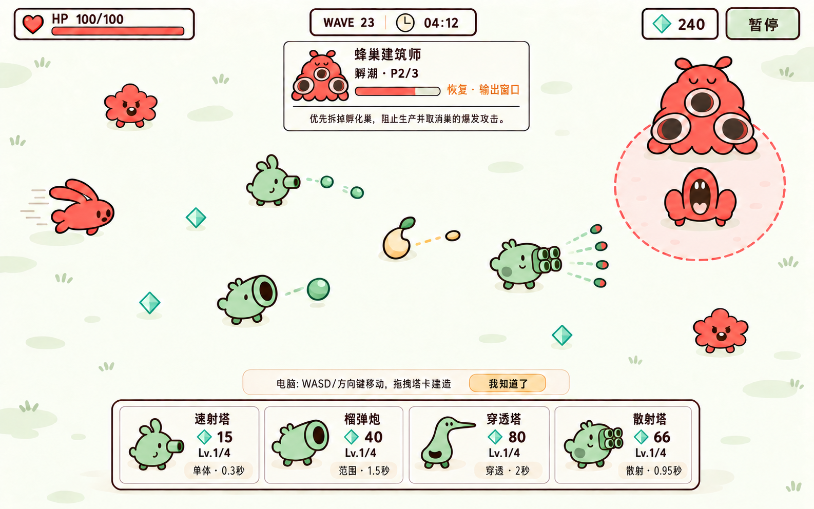

submitted · 待主审。1440×900逻辑布局目标，PNG实际1586×992。原画，不是实机截图。线危区依主审要求留后续真实来源场景；手机及拆解尚未开始。

已修复BASIC双顶芽、CANNON多余嘴、WAVE23和BURST四枚弹体。待审：WAVE23中FAST来源未证实；孵潮字形和SNIPER缩略图脚部可读性。完整说明见待审问题。此页面仅展示生成原画，无HTML/Canvas替代绘画。